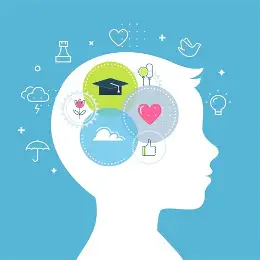
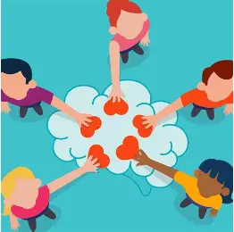

Autoconocimiento
Reconocer nuestras emociones, fortalezas, necesidades y áreas de oportunidad.
Un espacio para reconocer lo que sentimos, comprender a los demás y construir relaciones positivas dentro y fuera del aula.
Explorar habilidades
Tu bienestar importaSon capacidades que nos ayudan a identificar y regular nuestras emociones, establecer metas, tomar decisiones responsables y relacionarnos de manera respetuosa.
Reconocer nuestras emociones, fortalezas, necesidades y áreas de oportunidad.
Gestionar lo que sentimos y responder con calma ante los desafíos.
Comprender otras perspectivas y tratar a las personas con respeto.
Comunicar ideas, escuchar y trabajar en equipo para lograr objetivos.

La convivencia mejora cuando escuchamos sin juzgar, expresamos nuestras ideas con claridad y valoramos las aportaciones de cada persona.
El siguiente recurso audiovisual invita a pensar en la importancia de la vulnerabilidad, la conexión y las relaciones humanas.
Video externo de TEDx. Si no se muestra en tu red, puedes ver la charla en TED.
Escribe una idea o acción que te ayude a cuidar tu bienestar emocional o mejorar la convivencia con otras personas.
Antes de responder en un momento difícil, haz una pausa, identifica cómo te sientes y piensa qué necesitas comunicar.
Pequeñas acciones que pueden hacer una diferencia en nuestra vida diaria.
| Habilidad | ¿Qué significa? | Acción cotidiana |
|---|---|---|
| Autoconocimiento | Identificar emociones y fortalezas. | Nombrar cómo me siento. |
| Autorregulación | Manejar mis reacciones. | Respirar antes de actuar. |
| Empatía | Comprender a otras personas. | Escuchar sin interrumpir. |
| Colaboración | Construir metas en conjunto. | Ofrecer ayuda al equipo. |